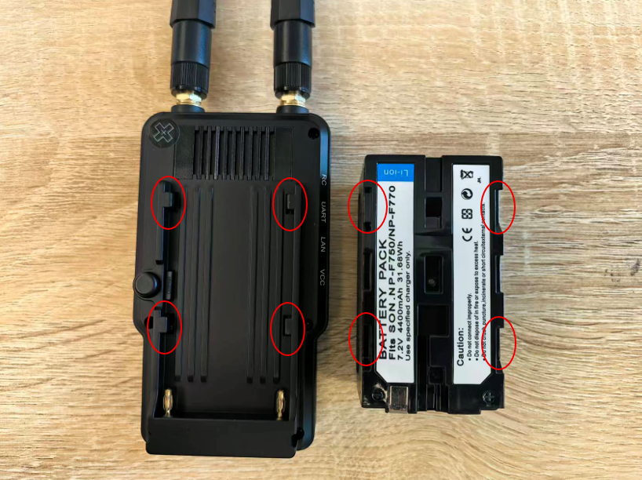
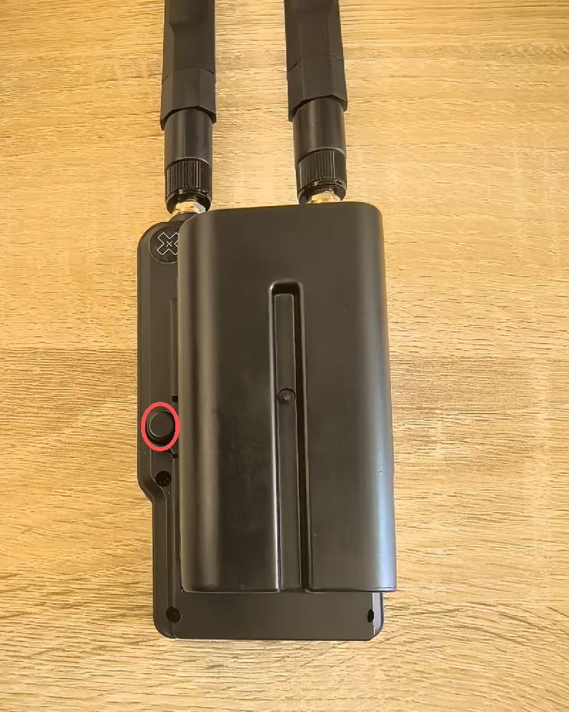
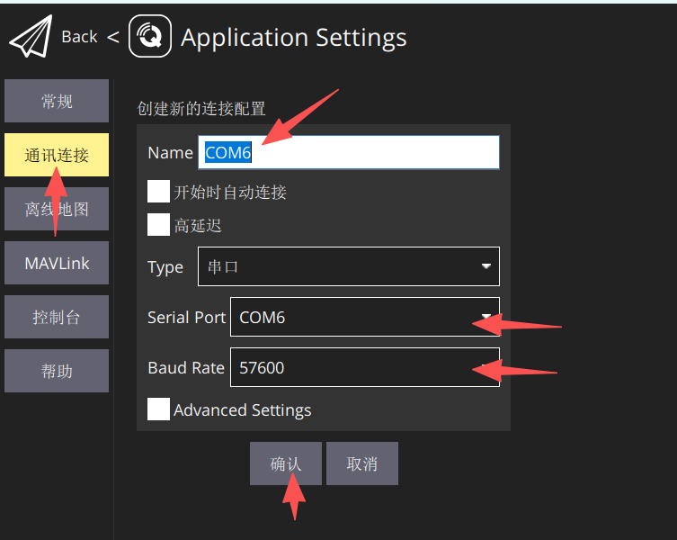

准备通信链路
- 硬件准备为每次飞行都需要进行
- 软件准备为第一次，按照教程配置。后续飞行，按需调整对应配置即可
硬件准备
- SIYI通信链路地面端
- 遥控器、接收机
- VtolS7无人机主体
- 无人机电池
-
电脑
-
给SIYI通信链路地面端、遥控器上电
-
将HM30本体对准电池卡槽，向下按压电池，确保安装没有虚位 

- 如需完成电池拆卸，需按住黑色按钮，上抬电池即可完成拆卸 
- 如图所示，短按加长按按钮启动通信链路地面端

-
硬件连接到SIYI通信链路地面端
-
连接接收机
- 连接电脑网口、USB口

- 将VtolS7无人机放置到空旷的起飞点，然后上电，关闭电池仓


- 等待SIYI通信链路地面端的提示灯由红变蓝
软件准备
无线连接飞控
-
部分电脑USB在连接上SIYI通信链路地面端，打开QGC后，会自动连接上。
-
如果没有自动连接，则按照下面教程手动连接
- 打开电脑设备管理器，找到新增的端口

- 打开QGC软件，新增一个端口连接，配置如下，然后点击确认

- 选中刚才新建的连接配置
- 点击连接，然后返回主页即可

- QGC主页有数据显示则说明连接成功

Nomachine 无线连接机载电脑
- 电脑网口连接SIYI通信链路地面端
- 打开网络配置的以太网

- 点击，编辑

- 按照下图配置网络即可

- 在终端测试，收到机载的回复，说明可以ssh、nomachine等远程访问机载了

- 打开Nomachine远程软件，添加下面的连接设置，再点击Add保存

- 双击，开始连接

- 输入账号、密码，点击OK

- 出现下图，则说明远程访问机载成功

VSCode SSH 连接机载电脑(推荐)
- 打开VS Code，安装Remote - SSH插件

- VS Code打开左下角绿色按钮，选择“连接到主机”

- 选择“配置SSH主机”

- 选择默认的SSH配置文件即可，将以下文字复制到.config文件中。
Host swing
port 22
HostName 192.168.144.60
User swing
- 再次点击VS Code左下角绿色按钮，选择“连接到主机”，随后选择swing进行连接。

- SSH远程连接成功后，可在VS Code中新建终端，进行机载计算机的远程终端操作。